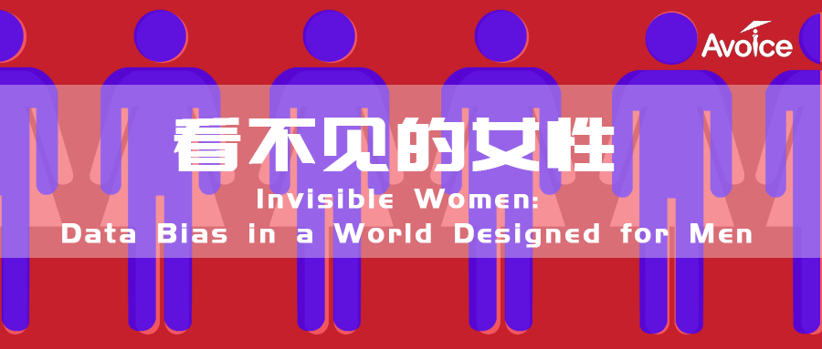
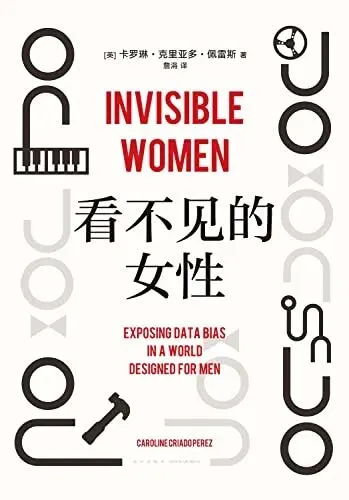
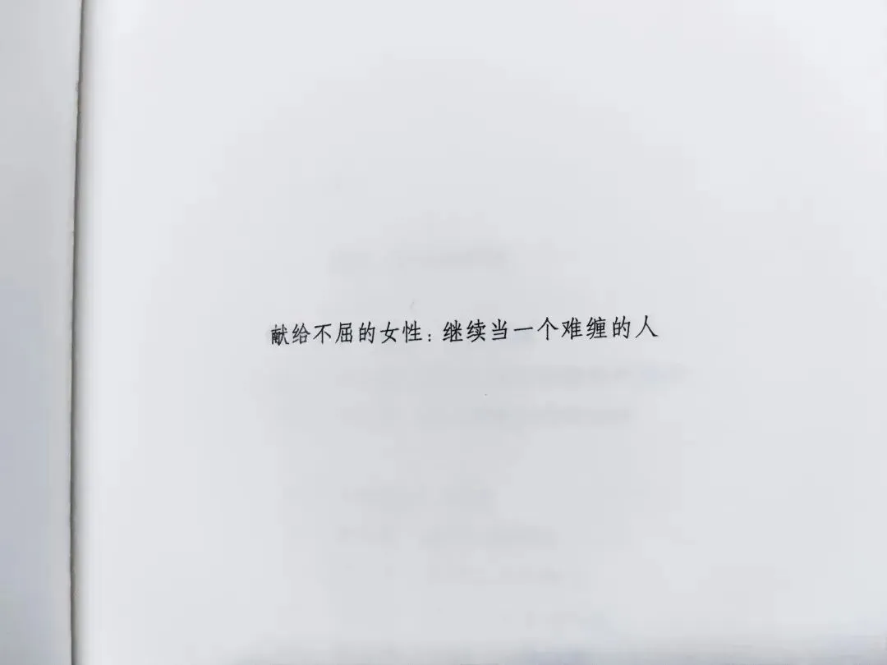
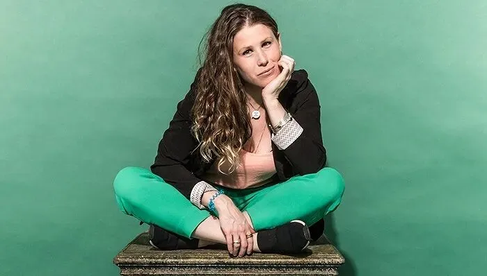

世界上被无视、被消声的一半人口
这是一部全新视角的女新研究作品，讲述了全世界一半人口被无视、被消声的故事，揭露“性别中立”背后的歧视，彻底更新性别思维。《看不见的女性》用海量数据和事例讲述了女性被系统性忽略的残酷事实。在大量“性别中立”的规则背后，男性往往被视为默认选项，而女性则被视而不见。
“将人类默认为男性，是人类社会结构的根本。”考古领域里，人类的骨头也不能幸免于“不加说明就是男性”，即使具有明显的骨骼特征，一名女性维京战士的骸骨在一百多年来一直被认为属于男性。语言学中，通用阳性词会被一面倒地理解为男性，甚至凌驾于原本强有力的刻板印象：在英文中，男性man可以代表全体人类man，而人口另一半的女性，只能作为男性的衍生woman；在法语、德语、西班牙语等具有“性别曲折变化”（gender-inflected)的语言中，女性用语往往是男性用语的变形，一个由100名女教师组成的群体，在西班牙中被称为las profesoras——但一旦往里面添加了一名男教师，这群人突然就变成los profesores，对照到中文里便是100个女性中加入一位男性，她们就变成了他们，这就是默认的男性力量。
语言的“霸权”也蔓延到职业中，当我们看到医生、总裁、领导、司机、外卖员……这些已经模糊了性别的职业词语时，脑海里第一时间浮现的依旧是男性的形象，而在这些普通的职业前加上强调性别的女字，那么她的专业程度总会或多或少地被质疑，我们听过太多关于女司机的吐槽，却很少见人们把男司机拎出来讨论，因为人们已经默认司机的性别就是男性，虽然在这样的认知下，并且事实也是如此，男性应该是造成交通事故的大头。
性别的傲慢不仅仅表现在语言或者观念中，对于女性的忽视更满布在我们的日常生活的方方面面。城市的规划者、汽车的设计者、药品的研发人员……各个领域的决策层中男性依旧占压倒性的优势，他们的参考对象，所谓的“人体工学”、“研究对象”同样以男性为主，而产品的另一半使用者女性不得不增加时间成本来克服种种不适：低于女性体感的空调让她们不得不多带外套、只方便男性工作出行而忽视女性为家务出行需求的城市设计耗费了女性大量的时间金钱，从而阻断她们用于个人发展的道路；甚至有些忽视对于女性的生命健康存在致命的打击——参考男性设计的汽车使女性在发生交通事故时受伤甚至丧命的几率远高于男性……

让女性被看见
每当女性开始抱怨因为忽视带来的诸多不便，她们收到的往往是“麻烦”、“事多”、“危言耸听”……的冷嘲热讽。当女性在冷冰冰的空调房里瑟瑟发抖要求提高温度时，她们常常会被一句轻飘飘的“体质差”搪塞；不同生理构造导致的如厕时间差异被忽视，面积平等的男女厕所让女性寻找安全厕所、排队等待如厕的时间成倍增加，而同行等待的男伴有时却要抱怨她的“墨迹”。
忽视女性的后果往往是更加糟糕的。“不让女性参与灾后工作，可能会导致整件事以闹剧收场。”全世界75%的无偿工作用女性完成，但面对重建工作，很多规划工作过程没有纳入女性，甚至没有咨询女性的意见，这导致重建的房子没有厨房、人道主义组织在难民营分发必须煮熟才能食用的食物，却忘了提供烹调燃料……
在出现各自问题时屏蔽女性的声音是十分讽刺的，尽管男性和女性在灾害面前遭受的创伤、流离、伤害和死亡是同样的，但是女性还会遭受到特有的不公。冲突爆发时，针对女性的家庭暴力事件随之增加。无论是面对战争、病毒或是自然灾害，女性在和男性面对同样的恐惧时，还要面对分娩的风险。女性无法决定何时分娩，如同人类无法预料灾难何时发生。人们对于救助伤员的热情并没有投射到女性的生理结构上，以至于一次又一次地出现灾难中女性的卫生用品需求被忽视、女性在分娩过程中死亡的悲剧。 杀死她们的不是灾难，而是性别——以及一个没有考虑到性别如何限制了女性生活的社会。
统计学上几乎是全方面的对女性的忽视，总会有一个主要的借口：女性太复杂，无法衡量。从交通规划人员到医学研究人员，再到技术开发人员，他们认为女性是不正常的、不典型的。简单更容易，简单更便宜，但简单不能反映现实。当你在你的统计算法中漏掉了全球人口的一半，你所创造的实际就只是混乱。
面对巨大的缺口，我们必须增加女性在各个生活领域中的代表性。因为随着越来越多的女性掌握权力，发挥影响力，另一种模式正变得更加明显：女人不会像男人那样，轻易忘记女人的存在。我们必须缩小女性代表不足的差距。确保女性在参与决策，研究和知识生产时不会变遗忘。确保女性的生活和视角走出阴影。“人们”所要做的仅仅是——向女性提问。

关于作者：卡罗琳·克里亚多·佩雷斯

卡罗琳·克里亚多·佩雷斯
（Caroline Criado Perez）
英国作家、记者。
毕业于牛津大学与伦敦政治经济学院，作品常见于《卫报》《泰晤士报》《金融时报》《新政治家》等知名媒体。2015年出版女性群像传记Do It Like a Woman，入选多家媒体年度好书榜单；2019年出版《看不见的女性》，获评英国书店奖蕞受读者欢迎好书、英国皇家学会科学图书奖、《金融时报》及麦肯锡商业图书奖等重要奖项，并被翻译成三十多种语言出版。
写作之外，卡罗琳·克里亚多·佩雷斯积极推动男女平等和社会正义，她成功阻止了英国银行移除英镑纸钞上除英国女王之外的唯一女性肖像；在雕像全为男性的英国议会广场上为妇女参政论者竖立雕像，以纪念英国女性在1918年获得选举权；促使推特更改关于网络暴力和威胁的处理程序，极大改善了公共讨论空间。
因长期为女性及弱势群体发声和行动，她于2013年被BBC评为年度百大女性之一，2015年被授予大英帝国勋章（OBE），2020年获得芬兰HÄN奖，2021年被林肯大学授予荣誉博士学位。
写一句诗给我，送一本书给你
我们准备了一本《看不见的女性》，想送给爱文学、爱Avoice的你，请仔细阅读以下诗句征集规则，欢迎带走这本书：
诗句要求：
1. 内容与Avoice项目或女性主义、女性保护等相关
2. 中外、古今、原创、摘录均不限，风格不限
3. 含义清晰，不过于晦涩难懂
4. 不宜过长，建议在30字以内，最多不超过40字
诗句用途：
最终入选的诗句将作为Avoice项目宣传语之一，长期用于各类宣传材料中。
参与方式：
1.关注Avoice海外华人女性保护项目公众号
2.扫描下方二维码或点击文章结尾“阅读全文”提交
截止时间：10月15日
文稿 | 官晓娜
校改 | 戴翰林
图片来源 | 网络
推文排版 | 官晓娜